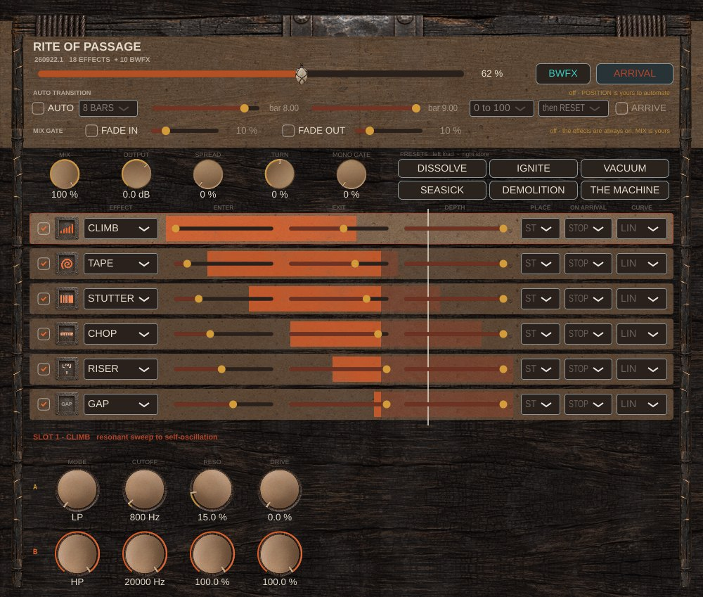
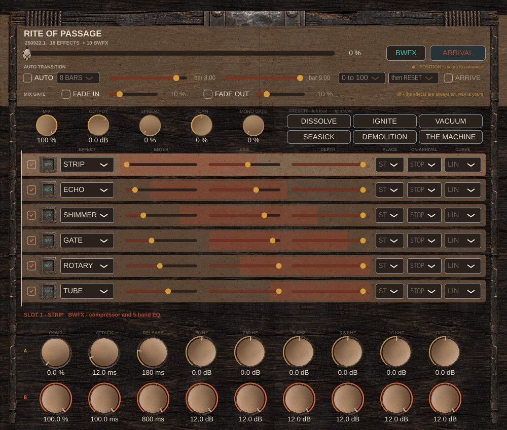
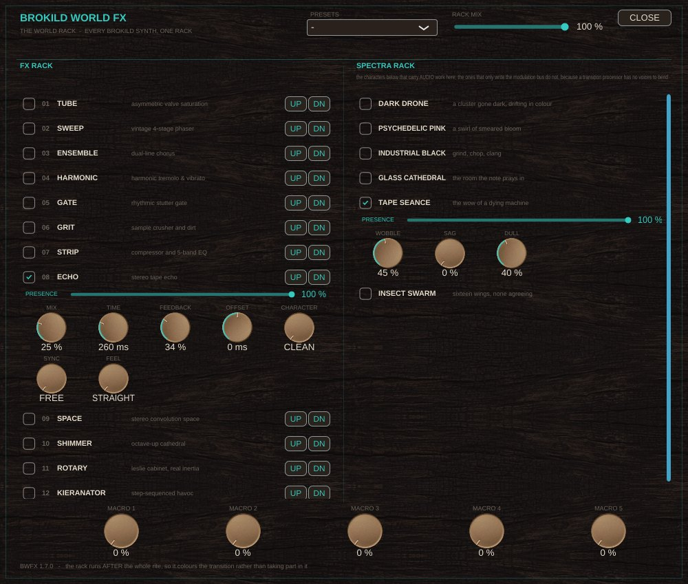
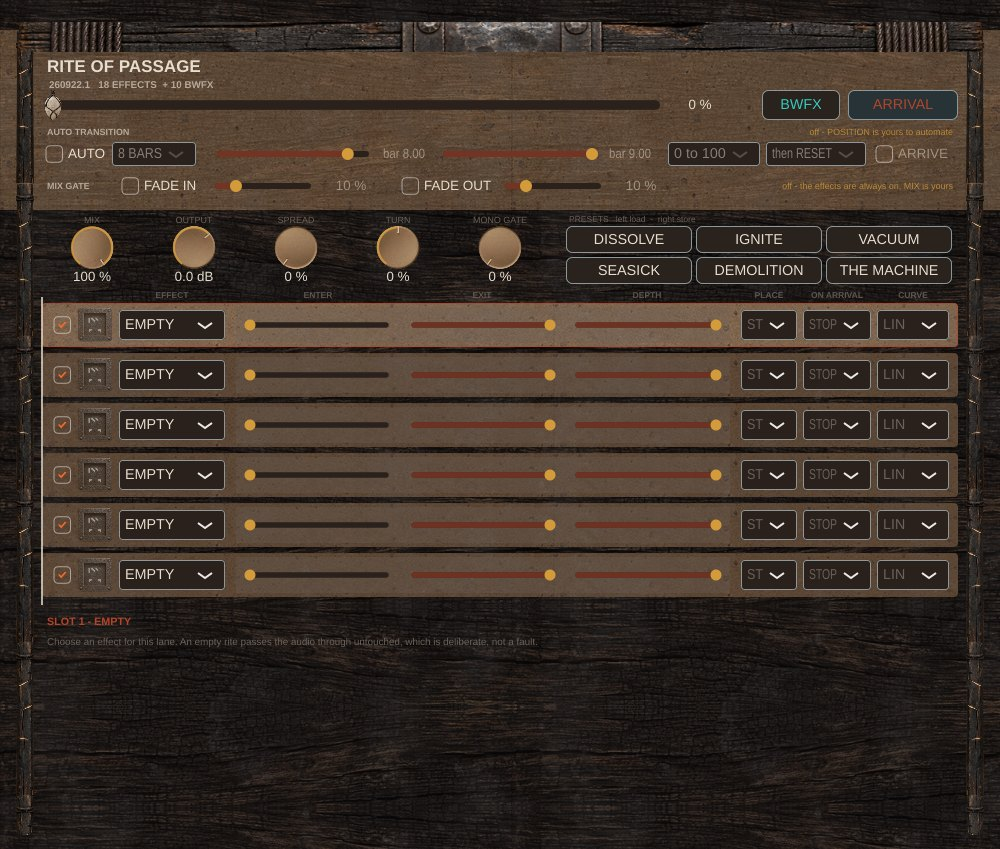

A transition is not an effect. It is a journey with a landing.
Everything a build normally asks of you — a filter sweep here, a stutter that tightens there, a reverb let off its leash in the last bar, all of it automated separately and none of it quite landing together — is one slider here. Six slots hold any of eighteen transition effects, and each one carries two complete settings plus where on the travel it starts moving, how fast, and how far it gets. The result is a score you read left to right, and the panel catches fire along it as the slider crosses. Then the landing is its own command, fired on the bar, to the sample.

The thing a macro knob cannot do: six gestures, each on its own schedule.
A macro maps one knob onto forty others and moves them all on the same curve. That is a morph, and it sounds like one. A transition is six separate things happening at six different times — the filter from the top, the stutter only in the last third, the tape sweep in the final eight bars — and the reason builds are hard to automate is that every one of those needs its own lane.
So every slot carries A and B, two complete settings, and three controls that decide the route between them:
This slot starts moving at 40 % and is finished by 85 %. Outside its lane it sits still.
Gradual, accelerating, decelerating, S, or out-and-back. Per slot, or per knob when two need opposite routes.
At 60 % the slot is still on its way when the drop lands, which is a different and often better sound than arriving early.
Duplicates are allowed and they are the point: two CLIMBs at different entry points, a slow stutter early and a tight one late. And the six slots are the chain order, so there is no drag-to-sort and nothing stored separately — where you put it is where it sits.
Gestures, not colours. If holding the slider still leaves you wanting it, it is a colour, and it belongs in the rack instead.
Because if the landing fires when the slider reaches the end, scrubbing while you edit fires a drop.
HOLD B is what the slider does. ARRIVAL is what you fire — its own automation lane, its own button, and if you would rather have one lane there is an opt-in that fires it once when the slider reaches the top going forward. It lands sample-accurately and on the bar: given the host's position it computes the exact sample offset of the next boundary inside the current buffer and fires there. Landing "on the bar" to the nearest buffer is landing half a beat late at 64 samples.
And every slot decides for itself what the landing does to it:
The slot stops processing on the instant. Whatever was in it is not coming back.
It stops being fed but keeps sounding — the reverb tail, the last echoes, spilling over the downbeat.
Silenced, and its buffers zeroed. The same reverb set to CLEAR instead of SPILL is a completely different landing.
ARRIVAL also restores the dry signal in one block, fires a tuned sub with a noise transient, and releases the MONO GATE — the width collapse over the last beat of the build. Silence, width and level changing at the same instant is what makes a drop land, and it is why the gap, the gate and the tail modes are three parts of one idea.
Once after the chain, where a colour belongs — and once inside it, where placement is the whole point.
Every Brokild instrument carries Brokild World FX, the shared rack, and this one is no exception: it sits after the six slots, and its five macros get their own lanes on the score, so the whole rack is sequenceable along the travel without spending a slot.
New in this build, ten of the rack's modules can also go in a slot — TUBE, SWEEP, ENSEMBLE, HARMONIC, GATE, GRIT, STRIP, ECHO, SHIMMER and ROTARY, from their own submenu at the bottom of every lane's effect list. That is not about reaching them; it is about where they sit. A GRIT before the filter is a dirty sweep and after it is a clean sweep into dirt. A GATE set to work the sides only rolls the room and leaves the lead alone. An ECHO set to SPILL rings on through a drop that clears everything around it. And because the rack's sync divisions are stepped, an ECHO travelling from ¼ to ¹⁄₃₂ changes division on the bar line like everything else here.
They arrive switched off — each one's amount knob starts at zero, so A is dry and the first thing you reach for is B — and they are held to the same bounds as the eighteen: no setting of any knob can put the output over 0 dBFS.


Dynamic panning is the obvious answer and the weakest one.
Stereo, mid, sides, or one channel. A filter closing on the sides only narrows the music without gutting the middle.
Each side runs the same score a few percent apart, so the image opens because the transition is happening.
Not a pan. The phantom image turns, energy preserved, both channels always occupied.
Width collapses over the last of the build and is let go at the arrival. Nothing makes a drop sound bigger for less.
Bass is mono below 120 Hz, always, with no switch — and mono compatibility is measured rather than hoped for: the mono sum of a rite at full SPREAD loses 2.9 dB against its stereo level, inside the 3 dB the bench allows. A transition that vanishes on a phone is not spectacular.
The first thing the bench measures.

With the slider at zero and nothing assigned, the plugin is bit-transparent, and the bench proves it rather than assuming it. Latency is zero, so nothing shifts when you insert it. Rendering is identical at 64 and 256-sample buffers, to the bit — the clock is derived from an absolute sample count rather than accumulated, because accumulating it made the same project render differently in two hosts.
There are six quick presets on the face — DISSOLVE, IGNITE, VACUUM, SEASICK, DEMOLITION, THE MACHINE — an AUTO TRANSITION that drives the slider over a bar count you set, and a MIX GATE so the whole chain is only in circuit while the slider is moving.
"Industry standard" is a claim, so here are the numbers instead.
| Engine bench | 506 checks, all clear — the score is obeyed, the loudness contract holds per effect, the arrival is sample-accurate |
| Wrapper harness | 57 checks — parameters, buses, state round trip, and scrubbing the slider fires nothing |
| Panel | 37 checks — rendered from the real editor, because a panel nobody has looked at is not finished |
| Level discipline | Every effect declares what it may do to loudness, and the bench sweeps every other knob and holds it to ±1 dB |
| Pitch discipline | Every declared non-mover stays within ±2 cents, and zero means exactly zero |
| Aliasing | Fast delay reads run through a polyphase cascade: worst fold −64.6 dB at a 2× read |
| Block independence | Bit-identical at 64 and 256 samples |
| CPU | About 10 % of one core with the six most expensive effects loaded at once |
| Format | Windows VST3 (64-bit) |
| Type | Effect — mono or stereo in, stereo out |
| Slots | Six, in series, duplicates allowed |
| Effects | Eighteen transition effects, plus ten Brokild World FX modules |
| Latency | Zero |
| Automation | Twelve parameters: the slider, the arrival, four globals, and the rack's five macros |
| Everything else | Stored as one opaque blob, so re-assigning a slot can never orphan an automation lane |
| Sample rates | Any. Bench-tested at 48 kHz. |
| Hosts | Any VST3 host — developed against Ableton Live 12 |
| Price | Free. No account, no registration, no telemetry. |